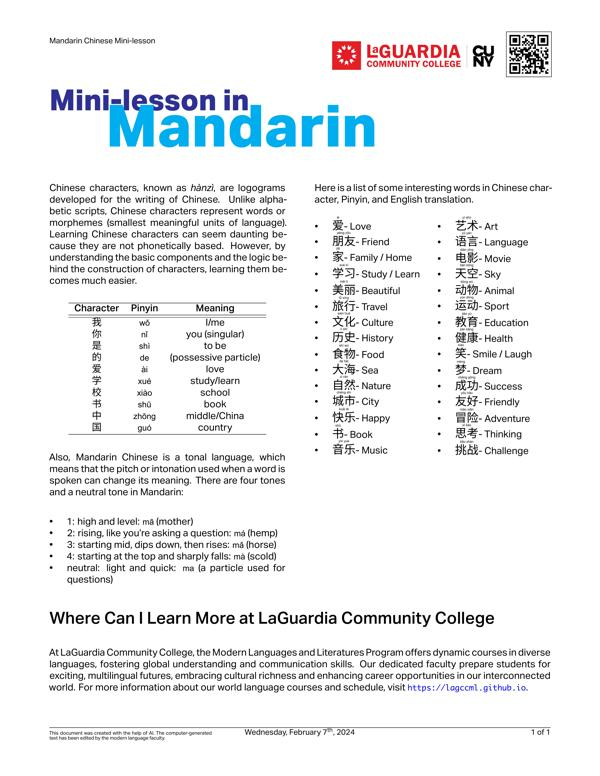
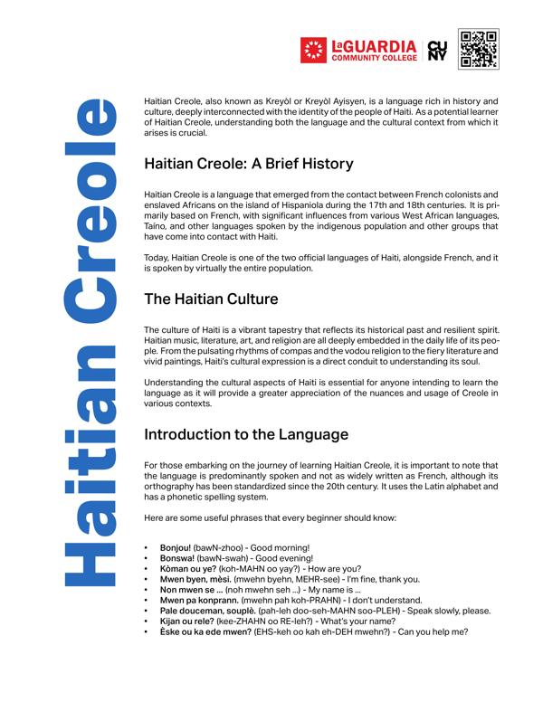
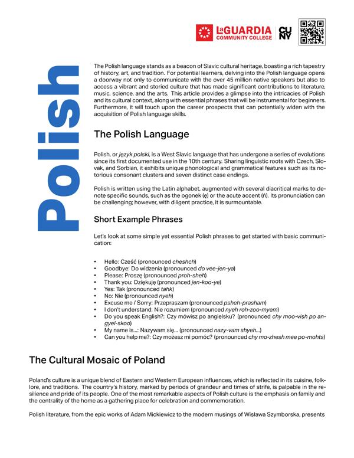
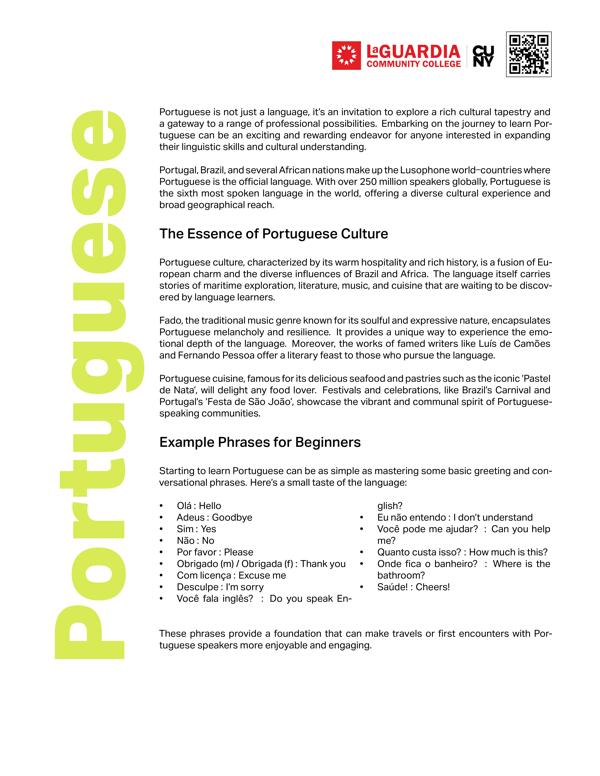
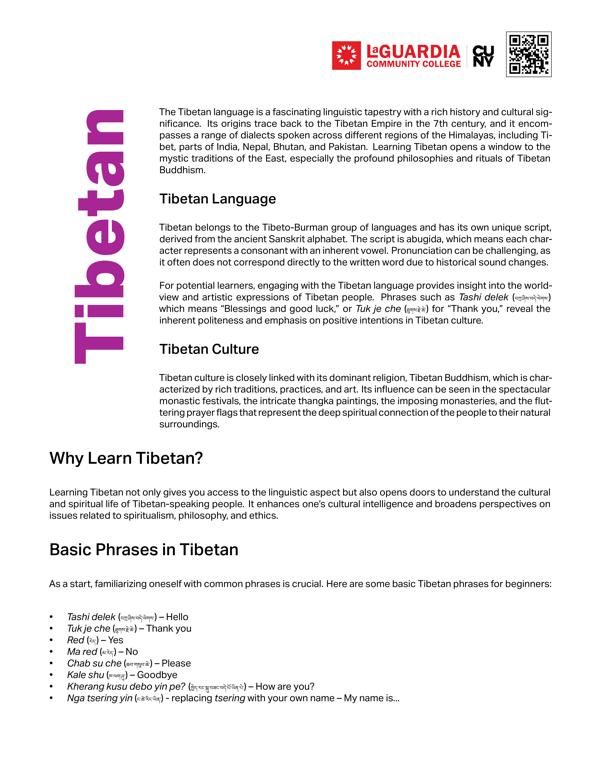
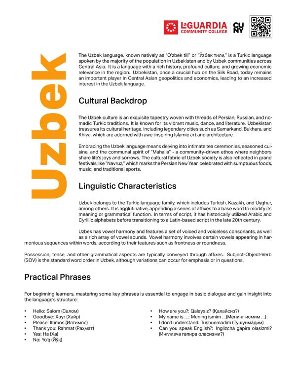
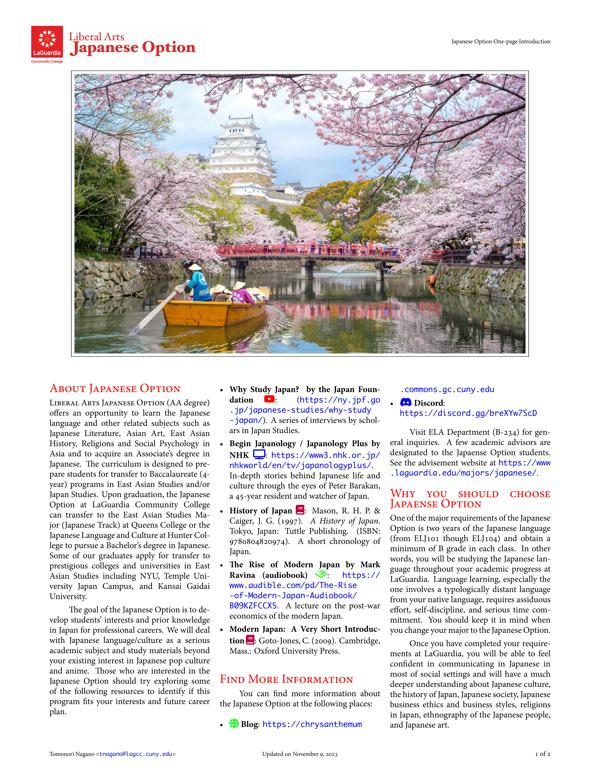

Modern Languages and Literatures Program (https://lagccml.github.io)
Modern Languages Program (general info)
About the Modern Languages and Literatures Program
In 1971 LaGuardia offered three languages: French, Italian, and Spanish. Today, the Modern Languages and Literatures Program, housed in the Education and Language Acquisition (ELA) Department, regularly offers 10 modern languages (American Sign Language, Arabic, Bengali, Mandarin Chinese, French, Italian, Japanese, Korean, Portuguese, and Spanish) and have 5 languages (Polish, Russian, Haitian Creole, Tibetan, and Uzbek) on the catalog. The ML Program offers one major (Spanish Translation Major (AA) with articulation with Hunter College and Brooklyn College), and three Liberal Arts Options (Latin American Studies Option, Deaf Studies Option, and Japanese Option). In the 12-week sessions, on average, the program runs 60-70 sections of the ML courses for about 1,200 students. In the 6-week sessions, the program runs 10-20 sections for about 200 students. The ML Program currently consists of five full-time faculty and a large number of affiliated/adjunct faculty members.
For more information about the Modern Languages Program and our courses, please see the following information sheets and flyers, especially the introduction presentation for our program at https://bit.ly/3EvD0DY. You can find information about the modern language courses in the CUNY's Pathways and the language requirement/transferability information
If you are interested in taking a modern language class at LaGuardia, the following videos will give you a quick overview of our language courses.
Why you should learn a modern language
There are four major reasons why you should study a modern language at LaGuardia Community College.- Take advantage of your bilingual skills
If you are already proficient in one of the languages we offer, you may earn three exemption (extra) credits by passing an intermediate-/advanced-level modern language class or a literature class. The exemption credits are life experience credits (see CUNY's Credit for Prior Learning page at https://www.cuny.edu/academics/academic-policy/credit-prior-learning/ for more info) and these credits could satisfy the Pathways General Education requirement depending on students' majors. - Get your language requirement out of the way before you transfer to a 4-year college
Many programs at four-year colleges require foreign language for graduation. It often takes at least one year or more to complete the language requirement, which may delay your graduation plans after transfer. If you plan to transfer to a four-year college but don’t speak a foreign language, you should start your foreign language study now at LaGuardia. See the "Modern Language Flyer" section for the list of foreign language requirements at the CUNY 4-year schools. - Take advantage of cultural diversity at LaGuardia
Our students come from over 150 different countries and speak more than 111 languages. Why not take advantage of our cultural diversity and develop skills for your future career? - A wide range of language proficiency levels and literature courses
LaGuardia offers a wide range of proficiency levels and various genre of literature courses. We offer courses in American Sign Language, Arabic, Bengali, Chinese (Mandarin), French, Haitian Creole, Italian, Japanese, Korean, Polish, Portuguese, Russian, Spanish, Tibetan, and Uzbek. In terms of proficiency levels, we offer the following different levels (using Spanish as an example, but all the other languages follow the same pattern):- Elementary Spanish (ELS101/102) for those without prior knowledge of Spanish
- Intermediate Spanish (ELS103/104) for students with intermediate-level proficiency in Spanish
- Spanish for Heritage Speakers (ELS105/ELS106) for heritage speakers of Spanish (those who have acquired Spanish as a home language)
- The Puerto Rican Community (ELN194) as an Urban Study course
- Latin American Literature I & II (ELS200/201) and other 200-level courses for advanced-level or near-native speakers of Spanish
Are you still wondering if you should learn a new language or not? If so, this amazing TED talk by John McWhorter @ Columbia University about benefits of learning a new language might convince you to take up a challenge (https://www.ted.com/talks/john_mcwhorter_4_reasons_to_learn_a_new_language?language=en )
A few national-level reports emphasize the importance of foreign language skills in the U.S. job market in the 21st centry. This is good information to share with your parents and academic advisors, who want to know more about the value of foreign language in your academic/professional careers.
Modern Language Tutoring
Language tutoring is available to all students registered in a modern language course at LaGuardia Community College. See the tutoring schedule at https://lagccml.github.io#tutoring. To make an appointment for tutoring, go to LaGuardia Navigate (https://www.laguardia.edu/navigate/students/) and make an tutoring appointment, following the instructions (How to Create Tutoring Appointment ).
Placement Exam
Students who wish to take a higher-level modern language class without its prerequisite classes (such as enrolling in ELS103 without completing ELS101 and ELS102) should use this self-assessment document to identify the appropriate level. The Modern Language Lab still administers the placement exam for students who want to identify more accurate assessment of their placement, but the placement exam is no longer required to register for a higher-level modern language course (see this curriculum informational item for more information).
The placement exam is administered in the Modern Languages Lab, located in Room B-206 (https://www.laguardia.edu/ela/#modern-langlab / 718-482-5466). The exam usually takes about one hour to complete and consists of a computer-based test (approximately 30 minutes) and a writing task. The placement exam is available for all the languages currently offered at LaGuardia Community College, including Arabic, ASL, Bengali, Mandarin Chinese, French, Haitian Creole, Italian, Japanese, Korean, Polish, Portuguese, Russian, Spanish, Tibetan and Uzbek. To schedule an appointment for the placement exam, please complete this form (https://bit.ly/MLLabPL) or contact Mr. Julio Rosario, the Coordinator of the Modern Language Lab, at 718-482-5466 or jrosario@lagcc.cuny.edu. For more information about the placement exam, you can visit https://lagccml.github.io/#placementExam.
Contact information for the Modern Language Lab
- Julio Rosario, Coordinator of the Modern Language Lab
- Tel: 718-482-5466
- e-mail: jrosario@lagcc.cuny.edu
- Room: B-206 https://www.laguardia.edu/ela/#modern-langlab
Business hours for the Modern Language Lab (during Summer 2024):
- Monday: 10:00am-6:00pm
- Tuesday: 10:00am-6:00pm
- Wednesday: 10:00am-6:00pm
- Thursday: 9:00am-6:00pm (remote every other week / jrosario@lagcc.cuny.edu)
- Friday: 9:00am-4:00pm
Exemption credits for proficient speakers
Students who are proficient speakers of a language other than English can earn three exemption credits by passing an intermediate-/advanced-level modern language class or a literature class. The exemption credits are life experience credits (see CUNY's Credit for Prior Learning page at https://www.cuny.edu/academics/academic-policy/credit-prior-learning/ for more info) and these credits could satisfy the Pathways General Education requirement depending on your majors. For example, if a student takes a 103-level Spanish class (ELS103) without taking its prerequisite classes (i.e., ELS101 and ELS102), the student will be eligible for three exemption credits upon passing ELS103 in addition to the regular three credits for ELS103.
EXEMPTION CREDIT
Exemption Credit Policy (in effect Fall 2023): "Exemption credit from any credit-bearing course offered at LaGuardia may be granted on the basis of an examination or a project equivalent to the final requirement of the course. Equivalencies are determined by the faculty of the appropriate academic department and must be approved by the chairperson. Exemption credit may not include credit for prior coursework, which falls under transfer credit. Exemption credit must be earned at LaGuardia, either through examination, project, or portfolio review.The maximum number of exemption credits that can be counted towards LaGuardia’s 30-credit residency requirement for a degree is 10. A maximum of 6 exemption credits may be applied toward the residency requirement for a certificate."
All eligible students should have taken some form of the placement test (either an in-person test in Room B-206 or the self-diagnostic test). Most 105-level (heritage level) and 200-level (near-native level) students should be eligible for the exemption credits.
Eligible students should submit their information through https://bit.ly/MLExemptionCr by the end of the semester. It is important that students submit information in a timely manner. Failure to do so will result in a significant delay in the process to award exemption credits. It usually takes 2-4 weeks to process the paperwork after the last day of the final exam. Note that the student must receive a passing grade for a class in order to receive exemption credits.
Starting from Spring 2023, students will be eligible for exemption credits when (1) they demonstrate their prior knowledge in a modern language (ML) by passing 102 or a higher level ML course without taking its prerequisite courses; and (2) they receive a grade C or above in that ML course. See this memo for more information about this policy.
Policy about the exemption credits for LAS and SET students
- Exemption credits will be granted for Latin American Studies (LAS) and Spanish-English Translation (SET) students only with prior approval from the LAS/SET program director (currently Prof. Ana Maria Hernandez). Students in these majors are advised to speak with their program director prior to submitting their request for exemption credits. Generally, LAS/SET students are encouraged to take an additional major/option related course under the Pathways Flexible Core or the Program Core (for LAS). This new policy encourages students to be better prepared upon transfer when they take level 300 and 400 courses upon transfer. It also provides a more competitive CV for transfer or employment purposes.
If students have any questions about the exemption credits, contact Julio Rosario at 718-482-5466 / Room B-206 / jrosario@lagcc.cuny.edu.
How to register for a modern language class
Placement exam
Students with previous knowledge in languages other than English should take the placement exam in order to identify an appropriate level for them to learn that language. Students who have taken a foreign language class at high school are typically placed into 102- or 103-level courses. Studnets who speak the target language at home (e.g., those who are raised in a Spanish-speaking household) are usually placed into 105-level courses. In order to take the placement exam in modern language, please contact the Modern Language Lab (see Contact below) to make an appointment.
LaGuardia students
If you are a LaGuardia student (matriculated in a degree program), you should be able to register for a modern language course through the regular registration procedure (using CUNYfirst or in person at the Registration lab in room B-218). If you want to take an intermediate or advanced-level course (e.g. 102, 105-level courses) without taking lower-level courses (e.g., 101 level), you should take a placement exam before the registration at the Modern Langauge Lab (B-206/718-482-5466). Please contact the Modern Languages Lab staff if you need help with registration. See the contact information below.
Non-LaGuardia students
If you are not a LaGuardia student, you can register for a modern language course through Adult and Continuing Education (ACE) Division (not through the Registrar's Office). Contact ACE's Enrollment Service Office. See the ACE's registration website (https://www.laguardia.edu/enrollment-management-services/ or contact the following ACE staff if you need any help with your registration.
- Serena Bowles, Assistant Director of Enrollment Management Services, ACE
- Phone: 718-482-5124 / E-mail: sbowles@lagcc.cuny.edu
- Valerie Seignious, Enrollment Management Services, ACE
- Phone: 718-482-5120 / E-mail: vseignious@lagcc.cuny.edu
Contact Information for Modern Languages Program
If you have questions, please contact:- Luis Guzmán Valerio, Ph.D.
Coordinator of the Modern Languages and Literatures Program
718-482-5342 / lguzmanvalerio@lagcc.cuny.edu) / B-234 - Julio Rosario
Coordinator of the Modern Languages Lab
718-482-5466 / jrosario@lagcc.cuny.edu / B-206 - ELA department secretaries
718-482-5640 / ELA@lagcc.cuny.edu / B-234
Arabic
Arabic in New York State/City
New York State is home to the third most Arabic speakers in the country, after California and Michigan. The population is quite evenly concentrated around the state, but Manhattan and Brooklyn boast the highest numbers of Arabic speakers, both by percentage and by raw numbers. Neither borough features any neighborhood that is predominantly Arabic in character, but Bay Ridge, Brooklyn Heights and a stretch of Atlantic Avenue in Brooklyn have been identified as Arab-American enclaves. [From Funk, A. (2012). The Languages of New York State: A CUNY-NYSIEB Guide for Educators. The CUNY-NYSIEB.]Where can you find the Arabic-speaking communities in NYC?
- Brooklyn CD 10: Bay Ridge & Dyker Heights
- Brooklyn CD 11: Bensonhurst & Bath Beach
- Brooklyn CD 15: Sheepshead Bay, Gerritsen Beach & Homecrest
- Staten Island CD 2: New Springville & South Beach
- Queens CD 1: Astoria & Long Island City
- Staten Island CD 1: Port Richmond, Stapleton & Mariner's Harbor
- Bronx CD 11: Pelham Parkway, Morris Park & Laconia
- Queens CD 5: Ridgewood, Glendale & Middle Village
- Brooklyn CD 18: Canarsie & Flatlands
About our Arabic Classes
Sample Syllabi- Sample syllabus for ELA101
- Sample syllabus for ELA102
- Sample syllabus for ELA103
- Sample syllabus for ELA104
- Sample syllabus for ELA105
- Sample syllabus for ELA201
- Sample syllabus for ELA250
Arabic courses
Bengali
Bengali in New York State/City
As of 2006-08, New York's Bengali-speaking population was overwhelmingly concentrated in the five boroughs of New York City: 29,540 in Queens, 10,050 in Brooklyn, 4,795 in the Bronx, 2,705 in Manhattan, and 400 in Staten Island--15% of the US Bengali-speaking population lives in Queens (US Census, 2010a). Though the study of Bengali has yet to take firm root in American universities--only two doctoral programs in Bengali currently exist--the growing number of Bengali speaking children has led New York State to offer Bilingual Education certification in Bengali[...]. [From Funk, A. (2012). The Languages of New York State: A CUNY-NYSIEB Guide for Educators. The CUNY-NYSIEB.]Where can you find the Bengali-speaking communities in NYC?
- Queens CD 12: Jamaica, Hollis & St. Albans
- Queens CD 8: Briarwood, Fresh Meadows & Hillcrest
- Bronx CD 9: Castle Hill, Clason Point & Parkchester
- Queens CD 3: Jackson Heights & North Corona
- Queens CD 2: Sunnyside & Woodside
- Queens CD 4: Elmhurst & South Corona
- Queens CD 9: Richmond Hill & Woodhaven
- Brooklyn CD 12: Borough Park, Kensington & Ocean Parkway
- Queens CD 1: Astoria & Long Island City
About our Bengali Classes
Sample Syllabi- Sample syllabus for ELV101
- Sample syllabus for ELV102
- Sample syllabus for ELV103
- Sample syllabus for ELV105
- Sample syllabus for ELV201
Suggested textbooks and reference books
- Elementary-level Bengali (ELV101 and ELV102)
- Bhattacharji, Somdev (1988). Introduction to Bengali. Part II, Introductory Bengali Reader. Chicago: The University of Chicago Press. ISBN: 9788173041907. Note: Courses: ELV101, ELV102;
- Dimock, Edward C, Bhattacharji, Somdev, & Chatterjee, Suhas (2005). Introduction to Bengali. Part I, A basic course in spoken Bengali, with emphasis upon speaking and understanding the language. New Delhi, India: Ajay Kumar Jain. ISBN: 9788173041907.
- Sallomon, Carol, Abedin, Nandini, & Brandl, Klaus (1982). Epar Bangla Opar Bangla: Bangla across Borders!. Seattle, WA: The University of Washington Press.
- Bengali for Heritage Speakers (ELV105)
- Dimock, Edward C & Bhattacharji, Somdev (1961). Bengali Prose Reader for Second-Year Students. xx, xx: The University of Chicago Press.
- Dimock, Edward C & Jahan, Roushan (2006). Bengali Vaisnava Lyrics: a reader for advanced students. xx, xx: The University of Chicago Press.
- Radice, William (2008). Teach Yourself Bengali: A complete course for beginners (3rd). xx, xx: McGraw-Hill.
- Radice, William (1994). Teach Yourself Bengali: A complete course for beginners. xxx: NTC Publishing Group.
- Samsad, Sahitya (1982). Samsad Bengali-English dictionary. New York, NY: Hippocrene Books. ISBN: 9780781803724.
- Seely, Clinton B. (2006). Intermediate Bangla. xx, xx: The University of Chicago Press.
- Thompson, Hanne-Ruth (2010). Bengali: A comprehensive grammar. London, UK: Routledge. ISBN: 9780415411394.
Chinese
Mandarin Chinese in New York State/City
Though Queens, Brooklyn, and Manhattan counties have the largest number of Chinese speakers in New York State, there are sizable Sinophone populations in most counties. The Chinese of New York is far from monolithic: in a small survey of Manhattan and Flushing Chinatown residents, Pan (1997) found that 36.6% spoke Min as a first dialect, followed by 31.7% Cantonese, 20.3% Wu, and only 10.4% Mandarin. The different language backgrounds of different waves of Chinese immigrants has manifested itself in the shifting lingua francas of New York City’s two Chinatowns: Cantonese predominated among the (older wave) residents of Manhattan, while Mandarin is more heavily spoken in Flushing, Queens, and beginning to push out Cantonese in downtown Manhattan as well (Pan, 1997). [From Funk, A. (2012). The Languages of New York State: A CUNY-NYSIEB Guide for Educators. The CUNY-NYSIEB.]Where can you find the Chinese-speaking communities in NYC?
- Queens CD 7: Flushing, Murray Hill & Whitestone
- Manhattan CD 3: Chinatown & Lower East Side
- Brooklyn CD 11: Bensonhurst & Bath Beach
- Brooklyn CD 7: Sunset Park & Windsor Terrace
- Queens CD 11: Bayside, Douglaston & Little Neck
- Brooklyn CD 10: Bay Ridge & Dyker Heights
- Queens CD 8: Briarwood, Fresh Meadows & Hillcrest
- Brooklyn CD 15: Sheepshead Bay, Gerritsen Beach & Homecrest
- Queens CD 4: Elmhurst & South Corona
About our Chinese Classes
Sample Syllabi- Sample syllabus for ELC101
- Sample syllabus for ELC102
- Sample syllabus for ELC103
- Sample syllabus for ELC104
- Sample syllabus for ELC105
- Sample syllabus for ELC106
- Sample syllabus for ELC115
- Sample syllabus for ELC201
- Sample syllabus for ELC202
- Sample syllabus for ELC203
- Sample syllabus for ELC250
Mini-lesson in Mandarin Chinese
French
French in New York State/City
[T]he greatest concentration of US French speakers can be found in the states of Louisiana and Maine; however, the greatest number of French speakers belongs to New York State, with 141,017 as of 2007 (Valdman, 2010). Similarly, though the greatest concentration of French speakers in New York State can be seen [...] in St. Lawrence, Hamilton, Franklin and Clinton counties near Quebec, the largest numbers are found in three boroughs of New York City: Brooklyn, Manhattan, and Queens, in descending order. The 2000 Census counted 4,095 French speakers in the four upstate counties, 90,365 in the three boroughs mentioned. [From Funk, A. (2012). The Languages of New York State: A CUNY-NYSIEB Guide for Educators. The CUNY-NYSIEB.]Where can you find the French-speaking communities in NYC?
- Brooklyn CD 18: Canarsie & Flatlands
- Queens CD 13: Queens Village, Cambria Heights & Rosedale
- Brooklyn CD 17: East Flatbush, Farragut & Rugby
- Brooklyn CD 14: Flatbush & Midwood
- Brooklyn CD 9: Crown Heights South, Prospect Lefferts & Wingate
- Queens CD 12: Jamaica, Hollis & St. Albans
- Manhattan CD 8: Upper East Side
- Manhattan CD 10: Central Harlem
- Brooklyn CD 8: Crown Heights North & Prospect Heights
About our French Classes
Sample Syllabi- Sample syllabus for ELF101
- Sample syllabus for ELF102
- Sample syllabus for ELF103
- Sample syllabus for ELF104
- Sample syllabus for ELF105
- Sample syllabus for ELF201
- Sample syllabus for ELF250
Haitian Creole
Haitian Creole in New York State/City
Brooklyn is home to the highest concentration of Creole speakers in New York State and the most Creole-speaking EBs in the school system. Rockland County also has a high concentration of Creole speakers--particularly in Spring Valley--while several school districts in Nassau County rank right behind Brooklyn’s in numbers of Creole speaking Emergent Bilingual Learners (EBLs). [From Funk, A. (2012). The Languages of New York State: A CUNY-NYSIEB Guide for Educators. The CUNY-NYSIEB.]Where can you find the Haitian-Creole-speaking communities in NYC?
- Brooklyn CD 18: Canarsie & Flatlands
- Queens CD 13: Queens Village, Cambria Heights & Rosedale
- Brooklyn CD 17: East Flatbush, Farragut & Rugby
- Brooklyn CD 14: Flatbush & Midwood
- Brooklyn CD 9: Crown Heights South, Prospect Lefferts & Wingate
- Queens CD 12: Jamaica, Hollis & St. Albans
- Brooklyn CD 8: Crown Heights North & Prospect Heights
- Queens CD 8: Briarwood, Fresh Meadows & Hillcrest
- Brooklyn CD 16: Brownsville & Ocean Hill
About our Haitian Creole Classes
Sample Syllabithe Haitian Creole language and culture
We are collaborating with the following local non-profit organizations for our Haitian-Creole classes
- The Haitian Creole Language Institute of New York ( https://haitiancreoleinstitute.com)
- Haitian Studies Institute at Brooklyn College ( https://www.brooklyn.cuny.edu/web/academics/centers/hsi.php)
Hebrew
Hebrew in New York State/City
Where can you find the Hebrew-speaking communities in NYC?- Brooklyn CD 12: Borough Park, Kensington & Ocean Parkway
- Queens CD 8: Briarwood, Fresh Meadows & Hillcrest
- Brooklyn CD 14: Flatbush & Midwood
- Brooklyn CD 15: Sheepshead Bay, Gerritsen Beach & Homecrest
- Brooklyn CD 9: Crown Heights South, Prospect Lefferts & Wingate
- Brooklyn CD 18: Canarsie & Flatlands
- Manhattan CD 7: Upper West Side & West Side
- Staten Island CD 2: New Springville & South Beach
- Brooklyn CD 1: Greenpoint & Williamsburg
About our Hebrew Classes
Sample SyllabiItalian
Italian in New York State/City
New York City has the largest population of Italian Americans in the United States of America as well as North America, many of whom inhabit ethnic enclaves in Brooklyn, the Bronx, Manhattan, Queens, and Staten Island. New York is home to the third largest Italian population outside of Italy, behind São Paulo, Brazil and Buenos Aires, Argentina, respectively. Over 2.6 million[1] Italians and Italian-Americans live in the greater New York metro area, with about 800,000 living within one of the five New York City boroughs. This makes Italian Americans the largest ethnic group in the New York metro area. [From Wikipedia (https://en.wikipedia.org/wiki/Italians_in_New_York_City)]Where can you find the Italian-speaking communities in NYC?
- Brooklyn CD 11: Bensonhurst & Bath Beach
- Staten Island CD 3: Tottenville, Great Kills & Annadale
- Queens CD 5: Ridgewood, Glendale & Middle Village
- Queens CD 7: Flushing, Murray Hill & Whitestone
- Staten Island CD 2: New Springville & South Beach
- Queens CD 1: Astoria & Long Island City
- Brooklyn CD 10: Bay Ridge & Dyker Heights
- Queens CD 10: Howard Beach & Ozone Park
- Manhattan CD 8: Upper East Side
About our Italian Classes
Sample Syllabi- Sample syllabus for ELI101
- Sample syllabus for ELI102
- Sample syllabus for ELI103
- Sample syllabus for ELI104
- Sample syllabus for ELI107
- Sample syllabus for ELI200
- Sample syllabus for ELI250
Japanese
Japanese in New York State/City
According to the 2010 U.S. Census, 40,796 people of Japaense ancestry lived in New York State, the majority of who lived in the New York City metropolitan area. A fairly large Japaense community also exist in Bergen County in New Jersey and Westchester County, New York. Within New York City, the Japanese community are found in Murray Hill, Gramercy & Stuyvesant Town (Manhattan), Upper West Side & West Side (Manhattan), Upper East Side (Manhattan), Astoria & Long Island City (Queens), Sunnyside & Woodside (Queens), Forest Hills & Rego Park (Queens), Brooklyn Heights & Fort Greene (Brooklyn), and Bedford-Stuyvesant (Brooklyn). Many Japanese global corporations have their headquarters in New York City, resulting in a large number of business sojourners (those who live in the U.S. only for 5-10 years) especially in the business districts.Where can you find the Japanese-speaking communities in NYC?
- Manhattan CD 8: Upper East Side
- Queens CD 2: Sunnyside & Woodside
- Manhattan CD 4 & 5: Chelsea, Clinton & Midtown Business District
- Manhattan CD 7: Upper West Side & West Side
- Manhattan CD 6: Murray Hill, Gramercy & Stuyvesant Town
- Queens CD 1: Astoria & Long Island City
- Queens CD 6: Forest Hills & Rego Park
- Brooklyn CD 2: Brooklyn Heights & Fort Greene
- Manhattan CD 1 & 2: Battery Park City, Greenwich Village & Soho
About our Japanese Classes
Sample Syllabi- Sample syllabus for ELJ101
- Sample syllabus for ELJ102
- Sample syllabus for ELJ103
- Sample syllabus for ELJ104
- Sample syllabus for ELJ105
- Sample syllabus for ELJ201
- Sample syllabus for ELJ250
Video Introduction to ELJ250
Video Introduction to ELJ250
Video Introduction to Online Japanese Courses
The Japan Studies Program share updates on the social media platforms. Connect with us on Twitter and the program blog.
- Japanese Major Twitter http://twitter.com/JapaneseLaGCC
- Japanese Major Blog https://chrysanthemum.commons.gc.cuny.edu
Korean
Korean in New York State/City
The two counties with the highest percentages of Korean speakers are Tompkins and Queens, with New York City Districts 25 and 26, followed by the Ithaca City School District for most enrollments of emergent bilingual learners (EBLs) with Korean as a home language. Manhattan is home to Koreatown or ‘K-Town,' an ethnic enclave near the Empire State Building packed with restaurants, bookstores, salons and other businesses--including noraebang bars-- centered on Korean culture. More sophisticated engagement with Korean culture can be found at the Korea Society, an organization that sponsors art shows, film series, language and culture classes, lectures, readings and more. There is some indication that the more concentrated community may encourage use of Korean among American-born generations: 42% of NYC Koreans send their children to Korean language schools, as opposed to roughly half that nationwide (Shin, 2005). [From Funk, A. (2012). The Languages of New York State: A CUNY-NYSIEB Guide for Educators. The CUNY-NYSIEB.]Where can you find the Korean-speaking communities in NYC?
- Queens CD 7: Flushing, Murray Hill & Whitestone
- Queens CD 11: Bayside, Douglaston & Little Neck
- Queens CD 2: Sunnyside & Woodside
- Manhattan CD 6: Murray Hill, Gramercy & Stuyvesant Town
- Queens CD 8: Briarwood, Fresh Meadows & Hillcrest
- Manhattan CD 4 & 5: Chelsea, Clinton & Midtown Business District
- Queens CD 1: Astoria & Long Island City
- Manhattan CD 7: Upper West Side & West Side
- Staten Island CD 2: New Springville & South Beach
About our Japanese Classes
Sample Syllabi- Sample syllabus for ELK101
- Sample syllabus for ELK102
- Sample syllabus for ELK103
- Sample syllabus for ELK104
- Sample syllabus for ELK105
- Sample syllabus for ELK201
- Sample syllabus for ELK250
Video Introduction to Korean Classes
ASL
About our ASL Classes
Sample Syllabi- Sample syllabus for ELM101
- Sample syllabus for ELM102
- Sample syllabus for ELM103
- Sample syllabus for ELM104
- Sample syllabus for ELM210
Video Introduction to ASL Classes
Follow the Deaf Studies Program on social media
- Deaf Studies Program Facebook https://www.facebook.com/DeafStudiesLGA/
- Deaf Studies Twitter http://twitter.com/DeafStudiesLGA
Polish
Polish in New York State/City
Where can you find the Polish-speaking communities in NYC?- Queens CD 5: Ridgewood, Glendale & Middle Village
- Brooklyn CD 1: Greenpoint & Williamsburg
- Staten Island CD 2: New Springville & South Beach
- Brooklyn CD 11: Bensonhurst & Bath Beach
- Queens CD 6: Forest Hills & Rego Park
- Staten Island CD 1: Port Richmond, Stapleton & Mariner's Harbor
- Queens CD 14: Far Rockaway, Breezy Point & Broad Channel
- Queens CD 9: Richmond Hill & Woodhaven
- Brooklyn CD 10: Bay Ridge & Dyker Heights
About our Polish Classes
Sample Syllabi- Sample syllabus for ELP101
- Sample syllabus for ELP102
- Sample syllabus for ELP103
- Sample syllabus for ELP105
- Sample syllabus for ELP201
Polish language and culture
Portuguese
About our Portuguese Classes
Sample SyllabiPortuguese language and culture
Russian
Russian in New York State/City
New York State has the highest Russian speaking population in the USA, with 232,434 speakers (Shin & Kominski, 2010); Brooklyn and Queens counties boast the highest totals and percentages of the population within the state. Russian-Americans tend to integrate and diffuse quickly into mainstream American society (Kagan & Dillon, 2010), so their large numbers have not carved out many ethnic enclaves in the five boroughs. Brighton Beach in Brooklyn, also known as ‘Little Odessa,' is one of the few clear examples of a Russian neighborhood, boasting Russian groceries, a Russian theatre, and a Russian-language bookstore. The nearby neighborhood of Bath Beach is home to the only Russian dual language program in New York City, while Kew Gardens and Forest Hills are the neighborhoods in Queens with the highest level of Russian speakers in that borough. [From Funk, A. (2012). The Languages of New York State: A CUNY-NYSIEB Guide for Educators. The CUNY-NYSIEB.]Where can you find the Russian-speaking communities in NYC?
- Brooklyn CD 13: Brighton Beach & Coney Island
- Brooklyn CD 15: Sheepshead Bay, Gerritsen Beach & Homecrest
- Brooklyn CD 11: Bensonhurst & Bath Beach
- Queens CD 6: Forest Hills & Rego Park
- Brooklyn CD 14: Flatbush & Midwood
- Staten Island CD 3: Tottenville, Great Kills & Annadale
- Queens CD 8: Briarwood, Fresh Meadows & Hillcrest
- Staten Island CD 2: New Springville & South Beach
- Brooklyn CD 12: Borough Park, Kensington & Ocean Parkway
About our Russian Classes
Sample SyllabiSpanish
Spanish in New York State/City
The New York City area has the highest numbers and percentages of Spanish speakers in New York State--with the Bronx boasting the biggest concentration, followed by Queens, Brooklyn and Manhattan--though Latino communities can be found in every county of the state. New York's Spanish-speaking population has historically been and continues to be unique in its diversity: Mexico is the birthplace of more New York State foreign-born Latinos than any other country, but it only contributes 5.5% of the state's foreign-born population, as opposed to 29% nationwide, and only 10% of New York state's Latin American immigrants (MPI). Puerto Ricans, and Dominicans have historically exerted more of an impact on New York's Latino culture, particularly within the five boroughs; these remain the two largest communities in New York City, and those that have established the clearest ethnic neighborhoods, starting with the heavily Puerto Rican Barrio in Spanish Harlem, and later the Dominican Quisqueya section of Washington Heights (Zentella, 1997). The influence of Mexican immigration is growing nonetheless: in 2007, Mexicans were the fastest growing ethnic group in New York City (Limonic, 2007), and neighborhoods such as Spanish Harlem and Elmhurst/Corona in Queens are increasingly taking on Mexican flavor. [From Funk, A. (2012). The Languages of New York State: A CUNY-NYSIEB Guide for Educators. The CUNY-NYSIEB.]About our Spanish Classes
Sample Syllabi- Sample syllabus for ELS101
- Sample syllabus for ELS102
- Sample syllabus for ELS103
- Sample syllabus for ELS104
- Sample syllabus for ELS105
- Sample syllabus for ELS106
- Sample syllabus for ELS115
- Sample syllabus for ELS200
- Sample syllabus for ELS201
- Sample syllabus for ELS204
- Sample syllabus for ELS209
- Sample syllabus for ELS210
- Sample syllabus for ELS250

Tibetan
Tibetan in New York State/City
Come learn the basics of reading, writing, and speaking Tibetan in a small-group setting with Yeshi Jigme Gangne, a native speaker who has experience teaching Tibetan in India and the U.S. and is now a Tibetan-language project manager at Google. A language with a long literary tradition and several million speakers, Tibetan is now spoken in more parts of the world than ever before, including a growing community in New York City. [From the Endangered Language Alliance (https://elalliance.org/tibetan/)]Where can you find the Tibetan-speaking communities in NYC?
- Queens CD 2: Sunnyside & Woodside
- Queens CD 3: Jackson Heights & North Corona
- Queens CD 4: Elmhurst & South Corona
- Queens CD 5: Ridgewood, Glendale & Middle Village
- Queens CD 1: Astoria & Long Island City
About our Tibetan Classes
Sample SyllabiTibetan language and culture
Video Introduction to Tibetan Classes
Video Introduction to Tibetan Classes
We are collaborating with local non-profit organizations for our Tibetan classes.
- The Voices of the Himalaya project by Endangered Language Alliance ( https://elalliance.org/languages/himalaya/)
- Himalayan Language and Culture Program ( https://ctmd.org/programs/sharing-traditions/himalayan-language-and-culture-program/)
Uzbek
Uzbek in New York State/City
Where can you find the Uzbek-speaking communities in NYC?- Queens CD 6: Forest Hills & Rego Park
- Little Uzbekistan in Ditmas Park and Midwood (see this article on Little Uzbekistan)
Sample Syllabi
Uzbek language and culture
Literature in Translation
Urban Study Courses
What is an Urban Study Course?
Urban Studies courses offer students a range of methods to learn experientially. Strategies employed by our professors include having students do any of the following: interview citizens, shop owners, politicians, activists, attend Community Board meetings; use databases to generate trend charts for issues in specific neighborhoods and use those charts to write letters to news papers and politicians about the prevalence of certain problems; do field studies or ethnographies of museums, galleries, parks, libraries; study with a historical focus on a specific ethnicity or particular neighborhood (see https://lagcc-cuny.digication.com/urban_studies_at_laguardia/Urban_Studies_at_LaGuardia for more information about the Urban Study Courses). All LaGuardia students, regardless of their majors, must take at least one Urban Study course as part of their graduation requirement. The Modern Languages Program offers two Urban Study courses, Languages of the World and of New York City (ELN105) and The Puerto Rican Community (ELN194).Sample Syllabi
Deaf Studies Major
Liberal Arts Option: Deaf Studies
Video Introduction to Deaf Studies
Video Introduction to Deaf Studies
Japanese Option
Liberal Arts Option: Japanese Option
The Liberal Arts Japanese Option (AA degree) offers an opportunity to learn the Japanese language and other related subjects such as Japanese Literature, Asian Art, East Asian History, Religions and Social Psychology in Asia and to acquire an associate's degree in Japanese. The curriculum is designed to prepare students for transfer to baccalaureate (4-year) programs in East Asian Studies and/or Japan Studies. Upon graduation, the LA SSH Japanese Option at LaGuardia Community College can transfer to the East Asian Studies Major (Japanese Track) at Queens College and continue to pursue a Bachelor's degree in Japanese. Some of our graduates apply for transfer to prestigious colleges and universities in East Asian Studies including Columbia University, NYU, and Temple University Japan Campus. The goal of the Japanese Option is to develop students' interests and prior knowledge in Japan for professional careers. We will deal with Japanese language/culture as a serious academic subject (beyond casual interest in Japanese pop culture and anime). Those who are interested in the Japanese Option should try reading some of the following reference books to identify if this program fits your interests and plan for future careers.Welcome Letter for Japaense Option students
Spanish Majors
Spanish-English Translation Major
The Spanish-English Translation major (A.A.) is currently articulated with the following programs:- Spanish (Concentration in Spanish-English/English-Spanish Translation and Interpretation) at Hunter College (http://bit.ly/2NdXnNC)
- Spanish major at Brooklyn College (https://bit.ly/3bahd4s)
Liberal Arts Option: Latin American Studies
Video Introduction to Latin American Studies